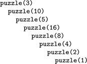
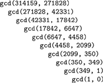
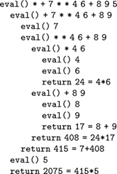

C++ Programming Robert Sedgewick - Princeton University Addison Wesley Professional Algorithms in C++, Parts 1–4: Fundamentals, Data Structure, Sorting, Searching, Third Edition C++ Programming Robert Sedgewick - Princeton University Addison Wesley Professional Algorithms in C++, Parts 1–4: Fundamentals, Data Structure, Sorting, Searching, Third Edition
5.1. Recursive Algorithms
A recursive algorithm is one that solves a problem by solving one or more smaller instances of the same problem. To implement recursive algorithms in C++, we use recursive functions—a recursive function is one that calls itself. Recursive functions in C++ correspond to recursive definitions of mathematical functions. We begin our study of recursion by examining programs that directly evaluate mathematical functions. The basic mechanisms extend to provide a general-purpose programming paradigm, as we shall see.
Program 5.1. Factorial function (recursive implementation)|
This recursive function computes the function N!, using the standard recursive definition. It returns the correct value when called with N nonnegative and sufficiently small that N! can be represented as an int.
int factorial(int N)
{
if (N == 0) return 1;
return N*factorial(N-1;
}
|
Recurrence relations (see Section 2.5) are recursively defined functions. A recurrence relation defines a function whose domain is the nonnegative integers either by some initial values or (recursively) in terms of its own values on smaller integers. Perhaps the most familiar such function is the factorial function, which is defined by the recurrence relation
N!=N .(N – 1)!, for N  1 with 0! = 1. 1 with 0! = 1.
This definition corresponds directly to the recursive C++ function in Program 5.1.
Program 5.1 is equivalent to a simple loop. For example, the following for loop performs the same computation:
for (t = 1, i = 1; i <= N; i++) t *= i;
As we shall see, it is always possible to transform a recursive program into a nonrecursive one that performs the same computation. Conversely, we can express without loops any computation that involves loops, using recursion, as well.
We use recursion because it often allows us to express complex algorithms in a compact form, without sacrificing efficiency. For example, the recursive implementation of the factorial function obviates the need for local variables. The cost of the recursive implementation is borne by the mechanisms in the programming systems that support function calls, which use the equivalent of a built-in pushdown stack. Most modern programming systems have carefully engineered mechanisms for this task. Despite this advantage, as we shall see, it is all too easy to write a simple recursive function that is extremely inefficient, and we need to exercise care to avoid being burdened with intractable implementations.
Program 5.2. A questionable recursive program|
If the argument N is odd, this function calls itself with 3N + 1 as an argument; if N is even, it calls itself with N/2 as an argument. We cannot use induction to prove that this program terminates, because not every recursive call uses an argument smaller than the one given.
int puzzle(int N)
{
if (N == 1) return 1;
if (N % 2 == 0)
return puzzle(N/2);
else return puzzle(3*N+1);
}
|
Program 5.1 illustrates the basic features of a recursive program: it calls itself (with a smaller value of its argument), and it has a termination condition in which it directly computes its result. We can use mathematical induction to convince ourselves that the program works as intended:
Reasoning like this can provide us with a quick path to developing algorithms that solve complex problems, as we shall see.
In a programming language such as C++, there are few restrictions on the kinds of programs that we write, but we strive to limit ourselves in our use of recursive functions to those that embody inductive proofs of correctness like the one outlined in the previous paragraph. Although we do not consider formal correctness proofs in this book, we are interested in putting together complicated programs for difficult tasks, and we need to have some assurance that the tasks will be solved properly. Mechanisms such as recursive functions can provide such assurances while giving us compact implementations. Practically speaking, the connection to mathematical induction tells us that we should ensure that our recursive functions satisfy two basic properties:
Program 5.3. Euclid's algorithm|
One of the oldest-known algorithms, dating back over 2000 years, is this recursive method for finding the greatest common divisors of two integers.
int gcd(int m, int n)
{
if (n == 0) return m;
return gcd(n, m % n);
}
|
These points are vague—they amount to saying that we should have a valid inductive proof for each recursive function that we write. Still, they provide useful guidance as we develop implementations.
Program 5.2 is an amusing example that illustrates the need for an inductive argument. It is a recursive function that violates the rule that each recursive call must involve smaller values of the arguments, so we cannot use mathematical induction to understand it. Indeed, it is not known whether or not this computation terminates for every N, if there are no bounds on the size of N. For small integers that can be represented as ints, we can check that the program terminates (see Figure 5.1 and Exercise 5.4), but for large integers (64-bit words, say), we do not know whether or not this program goes into an infinite loop.
This nested sequence of function calls eventually terminates, but we cannot prove that the recursive function in Program 5.2 does not have arbitrarily deep nesting for some argument. We prefer recursive programs that always invoke themselves with smaller arguments.

Program 5.3 is a compact implementation of Euclid's algorithm for finding the greatest common divisor of two integers. It is based on the observation that the greatest common divisor of two integers x and y with x > y is the same as the greatest common divisor of y and x mod y (the remainder when x is divided by y). A number t divides both x and y if and only if t divides both y and x mod y, because x is equal to x mod y plus a multiple of y. The recursive calls made for an example invocation of this program are shown in Figure 5.2. For Euclid's algorithm, the depth of the recursion depends on arithmetic properties of the arguments (it is known to be logarithmic).
This nested sequence of function calls illustrates the operation of Euclid's algorithm in discovering that 314159 and 271828 are relatively prime.

Program 5.4 is an example with multiple recursive calls. It is another expression evaluator, performing essentially the same computations as Program 4.2, but on prefix (rather than postfix) expressions, and letting recursion take the place of the explicit pushdown stack. In this chapter, we shall see many other examples of recursive programs and equivalent programs that use pushdown stacks. We shall examine the specific relationship between several pairs of such programs in detail.
Program 5.4. Recursive program to evaluate prefix expressions|
To evaluate a prefix expression, we either convert a number from ASCII to binary (in the while loop at the end), or perform the operation indicated by the first character in the expression on the two operands, evaluated recursively. This function is recursive, but it uses a global array containing the expression and an index to the current character in the expression. The index is advanced past each subexpression evaluated.
char *a; int i;
int eval()
{ int x = 0;
while (a[i] == ' ') i++;
if (a[i] == '+')
{ i++; return eval() + eval(); }
if (a[i] == '*')
{ i++; return eval() * eval(); }
while ((a[i] >= '0') && (a[i] <= '9'))
x = 10*x + (a[i++]-'0');
return x;
}
|
Figure 5.3 shows the operation of Program 5.4 on a sample prefix expression. The multiple recursive calls mask a complex series of computations. Like most recursive programs, this program is best understood inductively: Assuming that it works properly for simple expressions, we can convince ourselves that it works properly for complex ones. This program is a simple example of a recursive descent parser—we can use the same process to convert C++ programs into machine code.
This nested sequence of function calls illustrates the operation of the recursive prefix-expression–evaluation algorithm on a sample expression. For simplicity, the expression arguments are shown here. The algorithm itself never explicitly decides the extent of its argument string: rather, it takes what it needs from the front of the string.

A precise inductive proof that Program 5.4 evaluates the expression properly is certainly much more challenging to write than are the proofs for functions with integer arguments that we have been discussing, and we shall encounter recursive programs and data structures that are even more complicated than this one throughout this book. Accordingly, we do not pursue the idealistic goal of providing complete inductive proofs of correctness for every recursive program that we write. In this case, the ability of the program to "know" how to separate the operands corresponding to a given operator seems mysterious at first (perhaps because we cannot immediately see how to do this separation at the top level), but is actually a straightforward calculation (because the path to pursue at each function call is unambiguously determined by the first character in the expression).
In principle, we can replace any for loop by an equivalent recursive program. Often, the recursive program is a more natural way to express the computation than the for loop, so we may as well take advantage of the mechanism provided by the programming system that supports recursion. There is one hidden cost, however, that we need to bear in mind. As is plain from the examples that we examined in Figures 5.1 through 5.3, when we execute a recursive program, we are nesting function calls, until we reach a point where we do not do a recursive call, and we return instead. In most programming environments, such nested function calls are implemented using the equivalent of built-in pushdown stacks. We shall examine the nature of such implementations throughout this chapter. The depth of the recursion is the maximum degree of nesting of the function calls over the course of the computation. Generally, the depth will depend on the input. For example, the depths of the recursions for the examples depicted in Figures 5.2 and 5.3 are 9 and 4, respectively. When using a recursive program, we need to take into account that the programming environment has to maintain a pushdown stack of size proportional to the depth of the recursion. For huge problems, the space needed for this stack might prevent us from using a recursive solution.
Data structures built from nodes with pointers are inherently recursive. For example, our definition of linked lists in Chapter 3 (Definition 3.3) is recursive. Therefore, recursive programs provide natural implementations of many commonly used functions for manipulating such data structures. Program 5.5 comprises four examples. We use such implementations frequently throughout the book, primarily because they are so much easier to understand than are their nonrecursive counterparts. However, we must exercise caution in using programs such as those in Program 5.5 when processing huge lists, because the depth of the recursion for those functions can be proportional to the length of the lists, so the space required for the recursive stack might become prohibitive.
Program 5.5. Examples of recursive functions for linked lists|
These recursive functions for simple list-processing tasks are easy to express, but may not be useful for huge lists because the depth of the recursion may be proportional to the length of the list.
The first function, count, counts the number of nodes on the list. The second, traverse, calls the function visit for each node on the list, from beginning to end. These two functions are both also easy to implement with a for or while loop. The third function, traverseR, does not have a simple iterative counterpart. It calls the function visit for every node on the list, but in reverse order.
The fourth function, remove, removes all the nodes having a given item value from a list. The key to the implementation is the link change x = x->next in the predecessor of each node to be deleted, which is made possible by the use of a reference parameter. The structural changes for each iteration of the while loop are the same as diagrammed in Figure 3.3, but x and t here both refer to the same node.
int count(link x)
{
if (x == 0) return 0;
return 1 + count(x->next);
}
void traverse(link h, void visit(link))
{
if (h == 0) return;
visit(h);
traverse(h->next, visit);
}
void traverseR(link h, void visit(link))
{
if (h == 0) return;
traverseR(h->next, visit);
visit(h);
}
void remove(link& x, Item v)
{
while (x != 0 && x->item == v)
{ link t = x; x = x->next; delete t; }
if (x != 0) remove(x->next, v);
}
|
Some programming environments automatically detect and eliminate tail recursion, when the last action of a function is a recursive call, because it is not strictly necessary to add to the depth of the recursion in such a case. This improvement would effectively transform the count, traversal, and removal functions in Program 5.5 into loops, but it does not apply to the reverse-order traversal function.
In Sections 5.2 and 5.3, we consider two families of recursive algorithms that represent essential computational paradigms. Then, in Sections 5.4 through 5.7, we consider recursive data structures that serve as the basis for a very large fraction of the algorithms that we consider.
Exercises |  5.1 Write a recursive program to compute lg(N!). 5.1 Write a recursive program to compute lg(N!).
| | 5.2 Modify Program 5.1 to compute N! mod M, such that overflow is no longer an issue. Try running your program for M = 997 and N = 103, 104, 105, and 106, to get an indication of how your programming system handles deeply nested recursive calls. | | 5.3 Give the sequences of argument values that result when Program 5.2 is invoked for each of the integers 1 through 9. | |  5.4 Find the value of N < 106 for which Program 5.2 makes the maximum number of recursive calls. 5.4 Find the value of N < 106 for which Program 5.2 makes the maximum number of recursive calls.
| | 5.5 Provide a nonrecursive implementation of Euclid's algorithm. | | 5.6 Give the figure corresponding to Figure 5.2 for the result of running Euclid's algorithm for the inputs 89 and 55. | |  5.7 Give the recursive depth of Euclid's algorithm when the input values are two consecutive Fibonacci numbers (FN and FN+1). 5.7 Give the recursive depth of Euclid's algorithm when the input values are two consecutive Fibonacci numbers (FN and FN+1).
| | 5.8 Give the figure corresponding to Figure 5.3 for the result of recursive prefix-expression evaluation for the input + * * 12 12 12 144. | | 5.9 Write a recursive program to evaluate postfix expressions. | | 5.10 Write a recursive program to evaluate infix expressions. You may assume that operands are always enclosed in parentheses. | | 5.11 Write a recursive program that converts infix expressions to postfix. | | 5.12 Write a recursive program that converts postfix expressions to infix. | | | | 5.13 Write a recursive program for the Josephus problem (see Section 3.3). | | 5.14 Write a recursive program that removes the final node of a linked list. | | 5.15 Write a recursive program for reversing the order of the nodes in a linked list (see Program 3.7). Hint: Use a global variable. |
|